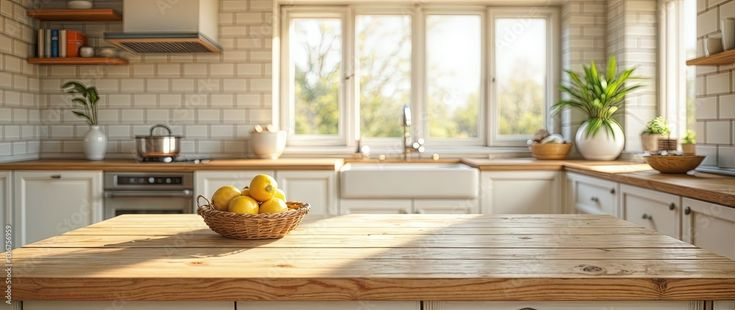

Marcas que trabalhamos:


Nossos Serviços
Conserto de Microondas
- Mais de 2.000 peças em estoque para trocas imediatas.
- Parcelamento em até 3x no cartão ou cheque.
- Serviço com garantia e atendimento especializado.
Conserto de Forno Elétrico
- Conserto em até 4 horas com agilidade e qualidade.
- Parcelamento em até 3x no cartão ou cheque.
- Garantia no serviço e possibilidade de reforma completa.
Reformas de Microondas
- Reformas indicadas para aparelhos antigos com ferrugem.
- Modelos antigos costumam ser mais duráveis e potentes.
- São mais potentes e não vazam microondas;
- Microndas reformados não vazam e duram até 30 anos.
- Hoje, a maioria das marcas disponíveis é de origem chinesa.
Acessórios Originais
- Pratos giratórios, rodanas, cruzetas e peças compatíveis.
- Traga a marca e o modelo do seu aparelho para garantir compatibilidade.
- Itens também para fornos elétricos e microondas diversos.
Microondas Novos e Usados
- Modelos disponíveis para pronta entrega (110v e 220v).
- Marcas variadas, direto da fábrica.
- Locação de microondas para empresas ou residências.
- Pagamento facilitado: até 6x no cartão, sem juros.
Serviço de Busca e Entrega
- Retiramos e entregamos seu aparelho em toda Curitiba.
- Basta agendar pelo telefone (41) 3332-8000.
- Mais conforto, sem sair de casa.
Nossas Lojas!

Entre em Contato
Preencha o formulário abaixo
Entre em contato através de nosso formulário, lhe responderemos o mais breve possível!
Fale conosco
(41) 3332-8000
Seg a Sex, 08h às 18h